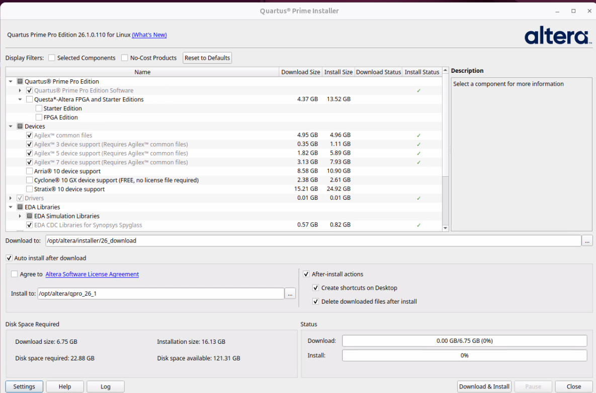

Version and operating system can be selcted using drop down menus:
Quartus Prime Installer allow the files required to be configured
prior to download and installation
Installation
cmd line only available - especially suitable for headless and
Dockerfile. An example that builds a docker image is provided here
GUI shows you which components are available. It’s easy to update
your installation later if you need to add families or features

Exploring the software through the GUI
Demo
Comparison to other tools
File names
Quartus file extension
usage
other tools equivalent
.qpf
Project file
.ldf .xpr
.qsf
Settings file
.lpf .xdc
.qip
Quartus IP file - a group of source files
.ip
Quartus IP file (IP-XACT)
.xml
.stp
SignalTap (logic analyser) file
.rvl .ltx
.qsys
Setting names
Assignments -> Settings
Compiler Settings -> Advanced Settings
Quartus setting
usage
other tools equivalent
Fitter Initial Placement Seed
Affects randomized initial placement
cost table
Scripted flow
The GUI is good for getting started and exploring what’s
possible.
It’s more reliable to compile from a script for production
Recompiling a design with unchanged sources on the same compute
architecture will produce the same artifacts
Changing any source file will change (even non-functional changes
like port list order)
Change Fitter Initial Placement seed to deliberately change initial
placement and change artifact
Change in operating system (eg Windows -> Ubuntu) could change
result
Recommendation as your design gets ready for
integration, define a CI job and use docker to ensure software versions
and OS/OS settings can be used. Altera builds docker images for the
Quartus software available from docker hub
You may also want to build your own. A starter guide is provided here
Scripted flow pt 2
Consider .qsys and .ip files source files. The generated hdl does
not need to be checked in.
ip-generate used to generate .ip files
Not required if Quartus compile flow is run first. Required if you
want to run simulation first or in parallel with Quartus
compilation
qsys-generate used to generate .qsys files
Not required if Quartus compile flow is run first. Required if you
want to run simulation first or in parallel with Quartus
compilation
Both hdl generation tools like to generate in-place which is awkward
for version control. My suggestion is to use a generated folder with
symbolic links
When all hdl is generated, compile using
quartus_sh --flow compile <project>
Levels of preservation
Design Partitions allow you to freeze part of your design by the
hierarchy that you define in your design entry.
Design Partitions may be constrained to an area of the FPGA using
LogicLock regions
The Signal Tap Logic Analyzer may use Design Partitions to preserve
all fitter results and then add the Signal Tap analyzer
Design Partitions and LogicLock regions are the foundation of
Partial Reconfiguration where part of a design may be reconfigured (eg
change protocol for attached HSSI transceiver)
Design partitions may be exported as .qdb files. A
.qdb can be included in a project as a source file
Initial content of RAM may be modified without changing fitter
placement and routing by using Update Memory Initialization
File option
Programming files
The assembler produces a .sof (Software object file) -
this file can be used with the Altera programmer to program the FPGA
through the JTAG interface.
The File -> Programming File Generator or
quartus_pfg can be used to make files in other formats:
.rbf (raw binary file) is a flat binary file intended
for use with an external master to send configuration data to the
FPGA.
.rpd (raw programming data) is a flat binary file used
to program a QSPI flash for Active Serial configuration using an
external programmer
.jic (JTAG indirect configuration) is a file used with
Quartus programmer to program a QSPI flash using JTAG and a JTAG-QSPI
bridge in the FPGA
.pof (Programmer object file) is used to program a
flash when the pins are directly connected to the Altera programming
file